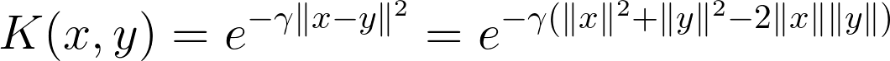

WRITE-UP
Summary
We have implemented a distributed and parallel Support Vector Machine training algorithm for binary classification using the OpenMPI library and the CUDA parallel programming model. Our implementation achieves the same accuracy as the ubiquitously used SVM solver LibSVM on 4 popular datasets, with speedups of up to 300x against the latter, and up to 10x against a few of the most highly-cited, recent papers on parallel SVMs. Our test environments include the Tesla K40m GPUs present on 10 nodes of the latedays cluster and the GTX 780 GPU present on the GHC-41 machine.
Background
The Support Vector Machine (SVM) is a widely used supervised machine learning algorithm - it is essentially a discriminative classifier used for linear and nonlinear classification tasks. The training of an SVM is a Quadratic Programming (QP) optimization problem, where the primal is converted to its dual form. In 1998, John Platt originally proposed the Sequential Minimal Optimization (SMO) technique for solving the dual QP problem, by breaking it down to a series of smallest possible QP problems.
The SMO technique iteratively solves for a target function, by updating the Lagrangian multipliers and the error terms over the entire training dataset. This algorithm, or variants of it, is used by several popular SVM solvers, including LibSVM. Our implementation uses a parallel version which distributes the task of training over different nodes, as proposed by Cao et. al. [1] and extends it to multiple GPU devices based on Herrero-Lopez et. al.'s [2] methodology. The exact loss function, and other equations describing the dual QP problem are succinctly summarized in section 2 of Herrero-Lopez et. al.’s paper - we’ll attempt to give a high level overview of the algorithm here to show how we can benefit from parallelization. As mentioned before, this is an iterative algorithm. Each update step involves:
-
Separating the training data points into 2 sets based on a function that involves the class of each point and the Lagrange multiplier associated with each point. The latter can be thought of as a weight, with the importance of a point in classification being directly proportional to this weight.
-
Selecting one representative point from each set, based on the maximum/minimum of a classification function defined for each point.
-
Updating the ‘weights’ of these two points.
-
Updating the classification function of all other training points, based on the two updates made in step III.
Step III involves the computation of three inner products using the kernel trick (each involving two training data input vectors). On the other hand, step IV involves the computation of (2*number_of_training_points) such inner products - each of the selected points versus the entire training set . However, this also exposes two potential avenues for parallelization:
-
The inner product and classification-function update steps can be parallelized. This involves a huge number of small calculations - particularly amenable to GPUs, and in particular BLAS functions implemented on GPUs.
-
The training data itself can be distributed over several nodes, with relatively small synchronization updates needed each iteration - this is particularly amenable to message passing paradigms liken OpenMPI.

Approach
Our approach seeks to exploit both the avenues of parallelization mentioned in the previous section.
-
Parallelizing kernel calculations using GPUs: For the kernel used to evaluate inner products, we use the Gaussian/Radial Basis Function (RBF) kernel - a very popular kernel function in SVM classification as it maps to an infinite dimensional space. The RBF kernel calculates the dot product of two input vectors x and y as follows:

As the equation above shows, this can be decomposed to depend on the sum of the norms of the individual vectors minus twice the ordinary vector product of the two. In step 4, as mentioned in the Background section, we need to do this for two selected points, each versus the entire training set. Now, we can’t pre-compute and store the dot product of each training vector with each other vector - this would require O(N2) storage, which won’t be available on GPUs for even moderately large datasets. We can, however, pre compute and store the norm of each vector - this requires only O(N) storage.
If we do this, we only need to calculate the ||x||.||y|| terms in each update phase - this corresponds to two matrix-vector products. Here, the matrix corresponds the training set and the vector corresponds each of the two selected training points. We use cuBLAS to efficiently parallelize these two matrix-vector dot products. The resulting number-of-training-examples sized vector of updates must be used to update the classification function of all the training points. However, order does not matter now - what we essentially have are a few vectors that need to be combined into one vector. Each component can be computed in parallel. For this, we use a thrust::for_each() loop with a custom functor to compute the update.
-
Distributing the training data over multiple nodes: Each successive step in the SMO algorithm involves finding two candidate points (a max/min operation), updating their weights, and doing a global update which depends only on these two points and the point being updated. Thus, we can shard our training data, locally find candidate points in each shard, and do a global reduction (another simple max/min computation) to find the global candidate points. Each node can then update its own shard in parallel.
This has the additional potential benefit of allowing datasets too large to fit into one GPU’s memory to be used. However, our implementation sacrifices this benefit to reduce communication overheads - we store the entire dataset at every node, so that only the indices of the global candidate points need be known by each shard, and not the full vectors. This is acceptable, since there are several complex datasets which are smaller than 500MB in size and still require millions of iterations to converge - any savings in communication overhead go a long way towards improving speedups for these. However, adapting to accommodate datasets that don’t fit in a single GPU’s memory would be fairly straightforward as well.
We use OpenMPI to achieve the functionality mentioned in this point.
Speed-Up Tricks
Our implementation also uses a couple of neat tricks to really improve performance:
-
It’s been observed (both in literature, and by us personally through painstaking profiling sessions) that candidate points tend to repeat themselves over short bursts - this immediately indicates that caching matrix-vector dot products should be helpful. Our approach uses an LRU cache for this purpose, the size of which can be specified as an input parameter. With a cache size of about ten lines (a line being the size of a training vector), we see a significant performance improvement (2x - 4x) on all datasets.
-
Post adding the cache, further profiling showed separating the data into sets and actually selecting the candidate points (steps I and II, as mentioned in the background) was often the bottleneck. Our initial implementation for this used a thrust::for_each() loop to make the sets (using a tricky, lock-less functor), and Thrust’s special maximum and minimum reduction functions to locate the points within the sets. However, this required a separate pass over each set. Instead, we replaced this with an approach where we built only a single aggregated set of tuples - the first element of the tuple represents a point in the set 1 and the second, a point in set 2. We then wrote a custom reduction functor to find the maximum of the first tuple entry and the minimum of the second in one pass itself. This showed a significant speedup as well, shaving a third off the times in our runs.
-
We use individual CUDA streams to calculate each of the 2 matrix-vector products required (if both cache lookups miss) in each iteration - this allows CUDA to mix the two SGEMV cuBLAS operations since they are mutually exclusive.
-
Our implementation also has several basic optimizations. We don’t allocate any GPU memory with loops - all allocation, CUDA stream setup and cuBLAS handle setup is done in a separate setup phase, and all destruction and deallocation is done in a separate ‘destroy’ phase. Any operation that can make use of an optimized thrust approach, does so.
Classification
One of our stretch goals for this project was to parallelize classification as well. This turned out to be a necessity, since our standard sequential approach took prohibitively long times for the larger datasets. While we haven’t spent much time optimizing this, we seem to match the parallel classification timings put forward by Herrero-Lopez et. al. in their paper. Classification essentially follows the following process:
-
For each test point, we evaluate a classification function that depends on the kernelized dot product of the test vector with each of the training points that has a non-zero, positive weight (i.e. those points of the training corpus that are ‘support vectors’).
-
We then add an unregularized bias term that is calculated as a result of the training process.
-
The sign of the final summation gives us our class prediction.
Our approach involves using a cuBLAS SGEMV operation, followed by a thrust transform_reduce operation using a custom functor to achieve this. For getting training accuracy (i.e. classifying the training data immediately post training), we also use Thrust to sparsify the training matrix by removing those points that aren’t support vectors in parallel.
Results
We've reused the CycleTimer we used in our homework assignments to measure times, both for overall run-timings, and for profiling the time taken by individual program segments. First off, this is the table of results for the 3 datasets mentioned in our proposal. All speedups mentioned are versus LibSVM runs on an Intel Core i7-920 2.67 GHz CPU. These LibSVM timings are reported by Herrero-Lopez et. al. and are the quickest ones amongst the various papers we referred to.
|
Setup vs. Dataset |
Adult |
MNIST (Even vs Odd) |
Covertype |
|
REFERENCE: Speedup achieved using a single Tesla C1060. [2] |
10.45x |
32.79x |
- |
|
REFERENCE: Speedup achieved using a less-accurate, quicker chunking algorithm on three Tesla C1060s. [3] |
13.53x |
82.9x |
(Note: 500,000 point subset of training data used) |
|
RESULT: Our Implementation: Single GPU calculations on GTX 780, multi-GPU calculations on latedays: 1 Tesla K40 on every node. CPU-based LibSVM times taken from [3] |
14.23x (1 GPU) |
102x (1 GPU) - 304x (10 GPUs) (in ranges of 500x if tolerance is reduced) |
(Note: Full 581,012 point dataset used.) |
The graphs below summarize the runtime and the speed-up statistics of DPSVM with respect to Herrero-Lopez et. al.'s implementation, for the MNIST dataset (LeCun et al., 1998) and the Web dataset (Platt, 1999). As mentioned in the table above, Herrero-Lopez et. al. profile their implementation using an NVIDIA Tesla C1060 GPU, while we use an NVIDIA GTX 780 for the single node case, and the NVIDIA Tesla K40m GPUs on latedays for the multiple node case.
The Spark MLLib's SVMWithSGD() implementation was profiled on an AWS EMR cluster, using 10 m3.2xlarge machines. Each m3.2xlarge machine has an Intel Xeon E5-2670 v2 CPU, with 8 vCPUs and 30GB of memory. The RDDs were persisted in memory for this Spark implementation. SVMWithSGD() essentially acts like a linear kernel, which would have smaller run-times, but sacrifices accuracy of classification for datasets which can't be separated with linear hyperplanes.
Challenges
Since we were using a distributed environment, we expected to see the communication-to-computation overhead increase with node-count for smaller datasets, and weren't wrong: this trend was observed using the Adult dataset (Asuncion & Newman, 2007), which actually performs better on a single GPU, as opposed to distributing work across different GPUs. This has been confirmed by profiling the run-time of the runs, with breakdown of the communication and computation times. The next few graphs illustrate this trend.As a side note, we'd also like to talk about the disparity in the hardware used in the reported statistics. This stems from several issues - one, to the best of our knowledge, there isn't any pre-existing distributed AND parallel implementation to benchmark against. Secondly, while GPU-optimized implementations are available online - they are not packaged well. We are still trying to resolve the dependencies for a couple of online implementations we recently found. Finally, a lot of the published results in this area are circumspect in the testing criteria they report, and the modifications they make to the datasets they test on. For example, some papers we found do not report the tolerance they used to converge - this has a direct bearing on accuracy, training time and number of support vectors identified.
In our results, we've tried to report the most reliable and highly-cited results we could could find. Additionally, for further reference, we've made a couple of last minute runs on the lowest performing GPU available on the GHC-clusters (the GPU 480X), and present those results here as well:
|
Setup vs. Dataset |
Adult |
MNIST (Even vs Odd) |
Web |
|
REFERENCE: Speedup achieved using a single Tesla C1060. [2] |
32.67s |
425.89s |
156.95s |
|
REFERENCE: Speedup achieved using a less-accurate, quicker chunking algorithm on three Tesla C1060s. [3] |
25.23s |
168.42s |
78.40s |
|
RESULT: Our Implementation: Single GPU calculations on GTX 480 |
31s |
208s |
88s |
Precise Run Statistics
MNISTTraining points: 60,000 ; Testing points: 10,000
Parameters of Gaussian Kernel: C = 10, gamma = 0.125, tolerance = 0.001
| Number of nodes | LibSVM 1 | Lopez et. al. 1 GPU | 1 | 2 | 4 | 6 | 8 | 10 | Spark 10 |
| Svm training time (in sec.) | 13964 | 426 | 137 | 106 | 66 | 54 | 48 | 46 | 101 |
| MPI communication time (in sec.) | n/a | n/a | 0 | 4 | 9 | 7 | 15 | 18 | n/a |
| Number of iterations to converge | 76104 | 68038 | 68200 | 67995 | 67866 | 67966 | 67884 | 68037 | n/a |
| Number of support vectors | 43753 | 43731 | 43732 | 43731 | 43730 | 43730 | 43729 | 43728 | n/a |
| b value (intercept) | -- | -- | -0.249805 | -0.249805 | -0.249864 | -0.249809 | -0.249868 | -0.249799 | n/a |
| Test accuracy | 0.9532 | 0.9532 | 0.9532 | 0.9535 | 0.9535 | 0.9535 | 0.9535 | 0.9535 | 0.878 |
Web
Training points: 49,749 ; Testing points: 10,000
Parameters of Gaussian Kernel: C = 64, gamma = 7.8125, tolerance = 0.001
| Number of nodes | LibSVM 1 | Lopez et. al. 1 GPU | 1 | 2 | 4 | 6 | 8 | 10 | Spark 10 |
| Svm training time (in sec.) | 2350 | 156.95 | 60 | 49 | 38 | 41 | 34 | 36 | 22 |
| MPI communication time (in sec.) | n/a | n/a | 0 | 6 | 12 | 20 | 14 | 14 | n/a |
| Number of iterations to converge | 85299 | 76242 | 77886 | 79953 | 80738 | 87146 | 78507 | 75968 | n/a |
| Number of support vectors | 35232 | 35220 | 35220 | 35220 | 35220 | 35220 | 35220 | 35220 | n/a |
| b value (intercept) | -- | -- | 0.948853 | 0.948856 | 0.949773 | 0.946923 | 0.948893 | 0.948896 | n/a |
| Test accuracy | 0.99415 | 0.99415 | 0.9919 | 0.994449 | 0.994449 | 0.994449 | 0.994449 | 0.994449 | 0.9709049562 |
Training points: 32,561 ; Testing points: 16,281
Parameters of Gaussian Kernel: C = 100, gamma = 0.5, tolerance = 0.001
| Number of nodes | LibSVM 1 | Lopez et. al. 1 GPU | 1 | 2 | 4 | 6 | 8 | 10 | Spark 10 |
| Svm training time (in sec.) | 341.5 | 32.67 | 24 | 33 | 37 | 41 | 43 | 48 | 15 |
| MPI communication time (in sec.) | n/a | n/a | 0 | 7 | 15 | 16 | 17 | 17 | n/a |
| Number of iterations to converge | 43735 | 115177 | 115612 | 131555 | 131422 | 130858 | 132037 | 131207 | n/a |
| Number of support vectors | 19058 | 18677 | 18694 | 18718 | 18705 | 18705 | 18708 | 18689 | n/a |
| b value (intercept) | -- | -- | 0.469509 | 0.455351 | 0.472694 | 0.478415 | 0.477845 | 0.497827 | n/a |
| Test accuracy | 0.82697 | 0.82697 | 0.82722 | 0.827283 | 0.827283 | 0.827283 | 0.827283 | 0.827283 | 0.8392 |
Platform Choice
After all our testing, we feel our results confirm that our distributed-GPU approach was a sound choice. Each iteration step is composed of a huge number of small calculations - amenable to GPUs. For complex datasets, communication overhead between nodes is outweighed by the lower iteration time on smaller, sharded data.
Room to improve
We feel we still have quite a few avenues open for improvement: we want to make some changes that will remove CPU-GPU communication entirely and rely on OpenMPI 1.8's neat GPU-GPU buffer transfer feature. Integrating this efficiently with thrust will be pretty tricky. Additionally, we'd also like to update our algorithm to use an adaptive approach that switches between the first-order heuristic we currently use (which has a large number of quick iterations), and a second-order heuristic used in some implementations (which has a smaller number of longer iterations). Finally, we'd also like to add support for more kernels. We hope to get some of this done over the summer.
The Bottom Line
We've come up with a parallel SVM training module which is as accurate as LibSVM, while being quicker than most other current available implementations. When shifted to a distributed environment, we feel our implementation would be hard to beat in terms of runtime for complex datasets. Additionally, we're confident the interface we provide will seem intuitive to any user who is familiar with LibSVM, or any other prominent sequential package available today.
Bibliography
[1] Cao, Li Juan, et al. "Parallel sequential minimal optimization for the training of support vector machines." Neural Networks, IEEE Transactions on 17.4 (2006): 1039-1049.
[2] Herrero-Lopez, Sergio, John R. Williams, and Abel Sanchez. "Parallel multiclass classification using SVMs on GPUs." Proceedings of the 3rd Workshop on General-Purpose Computation on Graphics Processing Units. ACM, 2010.
[3] Li, Qi, et al. "Parallel multitask cross validation for Support Vector Machine using GPU." Journal of Parallel and Distributed Computing 73.3 (2013): 293-302.
[4] http://www.csie.ntu.edu.tw/~cjlin/libsvmtools/distributed-liblinear/
[5] B. Catanzaro, N. Sundaram, and K. Keutzer. Fast support vector machine training and classification on graphics processors. In ICML ’08: Proceedings of the 25th international conference on Machine learning, pages 104–111, New York, NY, USA, 2008. ACM.
[6] Bache, K. & Lichman, M. (2013). UCI Machine Learning Repository. Irvine, CA: University of California, School of Information and Computer Science
Work division
Equal work was performed by both project members.